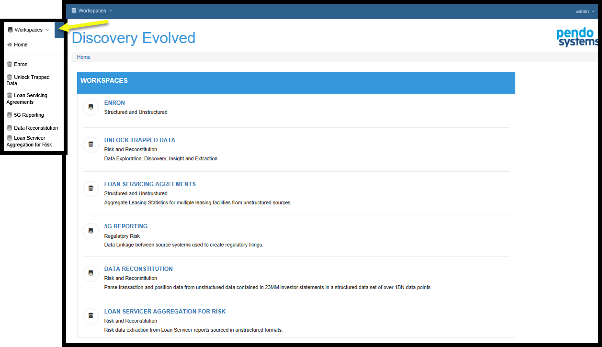
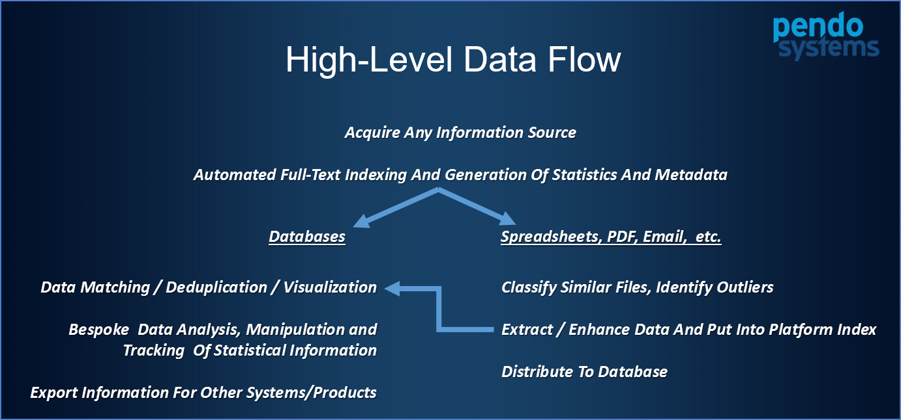
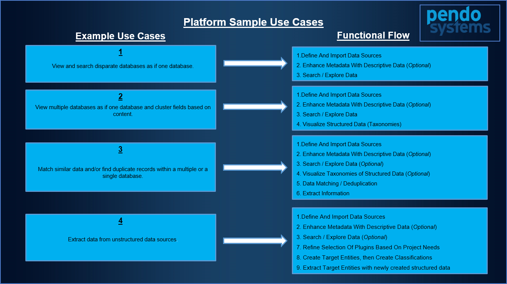

| Version | Release 3.9.x |
|---|---|
| Release Date | xxxxxxxxxxxxxxxxxx |
Introductory Material
- Legal Statement
- daaaaaa
- Document History
- Introduction
- Support Portal
- Administration Overview
- Login Page
- The Pendo Platform Home Page
- Workspace Home Page
- When to Use What – A Workspace Overview
- Known Issues
Legal Statement
This document contains proprietary information belonging to Pendo Systems and/or its affiliates. Such information is supplied solely for the purpose of assisting explicitly and properly authorized employees or consultants to evaluate or use Pendo products. No part of its contents may be used for any other purpose, disclosed to any person or firm or reproduced by any means, electronic or mechanical, without the express prior written permission of Pendo Systems. The text, graphics and examples included herein are for the purpose of illustration and reference only. The specification on which they are based are subject to change without notice. No legal or accounting advice is provided hereunder and any discussion of risk and regulatory compliance is purely illustrative.
The Software described in this document is furnished under a license. The software may be used or copied only in accordance with the terms of that license. Certain features and functionality described in this document may be optional features not included in a base product license and may only be accessed and used by licensees expressly licensed to use such features and functionality. Licensees should refer to their respective license agreements to determine whether they have licensed a particular feature or functionality.
Corporate and individual names and data used in examples herein are fictitious unless otherwise noted. Information in this document is subject to change without notice. Pendo Systems reserves the right to revise or withdraw this document or any part thereof, including, without limitation, the elimination or modification of any product functionality, at any time.
Copyright © 2017 Pendo Systems. All rights reserved.
Document History
Changes for from last Release
| Changes |
|---|
| Added a Legal Statement section at top of document |
| Moved the Document History to be right after the Legal Statement |
| XXXXXXXXXXXXXXXXXXXXXXXXXXXXX |
Introduction
This manual is meant for general Users of the Pendo Platform, or simply the Platform. It describes the core Components and Plugins in the Platform's Dynamic Workspaces. Dynamic _Workspaces are used to encapsulate the data and user permissions for any given project. As the name implies, data and users may be added/edited/deleted and manipulated in an ad-hoc fashion within this Workspace.
This and all other manuals are available for download from our Support Portal. Please see Support Portal below.
The Pendo Platform may be located on the Amazon Cloud or in-house behind your company’s firewall.
Support Portal
Usage
The Pendo Systems Client Support portal, called Zendesk, is available 24/7 and is meant as a single site for you to:
- Create and track tickets for incidents and requests. You will be able to see your tickets and those of your Organization.
- Access the latest available version of the Platform’s documentation.
- Access Release Notes.
- Access the Platform’s Releases.
- Visit the 'Support Articles' section of the Zendesk portal for FAQs.
PLEASE REPORT ALL ISSUES AND REQUESTS VIA THIS PORTAL. THIS IS A KEY TO PENDOS' TRACKING THE ISSUES AND LINKS TO OUR INTERNAL DEVELOPMENT AND RELEASE PROCESS.
Access
You can access the support portal at https://pendosystems.zendesk.com.
You will be provided login credentials through your internal support staff. Pendo will not have access to production machines or be able to set up Users for your company.
Administration Overview
The Pendo Platform can be seen as being used by three core types of users, each of which is often dealt with by different teams of people within a large organization. The exact types of users depends on your organization and the licensing agreement in place.
- A company's technical infrastructure team would be involved with the installation and configuration of the Platform. This may include initial setup of servers and storage areas, permissioning of same, as well as routine maintenance of the infrastructure used by the Platform. Routine installation of software releases may also fall in this domain or the next type of user. These people may or may not actually use the platform itself on behalf of the business users, but usually not.
- A special kind of User, set up as a Platform Administrator, who is in your company, will need to set up Workspaces, Users, Organizations, Groups and Roles. A separate manual Platform Administration, is available for Platform Administrators. Users, Groups and Roles may also be setup using your Single Sign ON (SSO) via LDAP and thus be under the control of your specialists in that area.
- Business Users who may be Subject Matter Experts (SMEs) and having skills ranging from non-technical business experts to data scientists. These are the users actually providing the business solution via use of the Platform's capabilities.
Logging in
You will use a WEB browser to access the Platform. The URL you use will be provided to you by your administrator. The Login Screen will ask for your email and password or, if using LDAP, your SSO.
After you log in, you will land on the Home Page.
Top of Section
Platform Home Page

The Home Page has several sections:
The top window line is common throughout.
- On the upper left side, the drop down menu lets you go to the Home Page or select a specific a Workspace.
- On the upper right side, the drop down menu gives access to the Administration Menu. Depending on your login permissions, the Administration Menu may be limited or not even appear.
The middle section of the screen allows you to click on any of the Workspaces. You will only see Workspaces to which you have been granted some level of access. Once you select a Workspace, you will go to the Workspace Home Page.
Usage of the Administration Menu is covered in a separate manual, Pendo Platform Administration.
Workspace Home Page
Components the Pendo Platform

A few definitions
Data is provisioned either by uploading it and persisting it on the Pendo Platform, by linking to it or by extracting information and storing it as metadata. Examples of Data include delimited files, both relational and non-relational databases, Spreadsheets, Word Processing Documents, PDFs, etc. The Platform supports flat files, any JDBC compliant database and various types of unstructured data.
Metadata
Entities are a representation of specific structures (e.g. Tables or Row Headers) which store data acquired from various databases or flat files. Entities are made up of a logical collection of Attributes, which represents the fields within the tables or columns found in flat files. For example the implied structure of data within the flat files or one of the tables in a relational database. There are two different type of Entities, Source and Target. More detail is provided in the sections below.
Document Sets are groups of unstructured data. This refers to pretty much any data not in a database, for example PDFs, Excels©, Word©, Google Doc©, or other files.
When to Use What – A Workspace Overview
When initially using a Workspace, using the Components in sequence is important. In general, start from the bottom and work your way up and move from left to right.
Please bear in mind that the Pendo Platform is a toolset. The exact functional flow and selection of components is dependent on the needs of your project. Here are a few diagram to help illustrate the core workflow and a few sample use cases with possible workflows indicated.


In other words, the Platform is used to access and organize data needed by the business line from sources previously deemed to difficult or time consuming to work with efficiently.

File and Folders, Remote Sources and Uploads
You will need acquire data for any given project. Depending on your organizations security requirements, it is possible that only certain administrators will be allowed to provision data for any Workspace. The components used are:
- File and Folders: This component uploads files into a file management system that is part of the Platform. Folder management, that is creating folders and sub-folders, is supported.
- Remote Sources: This component imports data that is accessed remotely, such as databases. This component is also used to import anything that was Uploaded via the Upload Component.
- Uploads: Uploads is currently used to upload zipped files to the platform's server.
Note on Deletion
Currently, if you wish to delete anything, you may first need to delete everything to which that item belongs. For example, to delete a Document Set, you must first delete any Document Classes associated with that Document Set. Cascading deletion that takes care of this automatically and provides appropriate warnings is being introduced gradually.
Initial Exploration of Data
Unified Search. As soon as any data is imported and indexed, it may be searched.
- If the data is structured, importing automatically creates an Entity or many Entities (one per table or flat file) along with many Attributes (one per column for each table). Full-Text Indexes will also be automatically created, allowing both simple and sophisticated searches across all Indexed data on the Pendo Platform as if it were one unified database.
- If the data is unstructured, importing automatically creates Document Sets. Full-Text Indexes will also be automatically created, allowing both simple and sophisticated searches across all Indexed data on the Pendo Platform as if it were one unified database.
- During and after import of unstructured data, you can elect to use some combination of Plugins, giving access to core Platform capabilities as well as advanced, optional capabilities. More on this topic can be found in the Data Sources Component and Appendix – Data Plugins sections below.
The Entities component has two main purposes:
- Allows you to view the structure of the Entities and Attributes that were created when a database or flat file was imported. Entities created by importing databases are referred to as Source Entities.
- Allows for the creation and modification of Target Entities which are used to store the data that is extracted from Documents Sets during a Document Classification.
Document Sets are collections of unstructured files such as word processing documents, spreadsheets. etc.
Document Classes allows for the classification of Document Sets in order to group them, search and navigate thru them to get to data that you wish to extract and organize.
Known Issues
- IE 11 compatibility issues that will be resolved in future release. These do not affect any production issues.
- In Search screens, Cluster View is not working at all.
- In some Searches, the Hits column is not showing or highlighting the text that was found by the Platform. NOTE: The row is returned correctly and you may use the Detail View icon (left-most icon on each row) to review the document.
- Date/Time fields have two outcomes, depending on the screen you are on. This is expected behavior, not an issue.
- In the Document Class Mapping Preview of data or the Attachment Preview screens, the date and time will be formatted as specified, but will be sorted as string. Remember, this is a preview screen, the data has not yet been transformed and moved to the Target Entity.
- After an Attach has been run and if the date mapping is correctly formulated and has been saved to a properly date formatted Attribute, Searches of a Target Entity result in a column where the date data type is respected and true date/time sorting is supported.
- .zip and .csv files are not supported in the Files and Folders Component. Please continue to upload them via the Upload Component and then Create and Import a Remote Source.
- Files or folders that have commas in their name are not supported by the Platform. Please rename any such file or folder before uploading it to the Platform. _ An exclamation mark at the start of a lookup value is not supported.
- Text Table Mappings is not currently available for use.
- in a Search result, Cluster mode not fully implemented
- The following Cluster sub-options are not working in Word documents: Keywords, Lines, Cell Values and Cell Reference.
- Not working in Excel: lines, cell values, cell references.
- Double-byte characters are not displaying correctly, thus multi-lingual abilities are not available. This effects special accents used in many languages and the double-byte characters like Chinese, Arabic, Japanese.
- Importing of PST files results in no content / structured data for that particular Document Set.